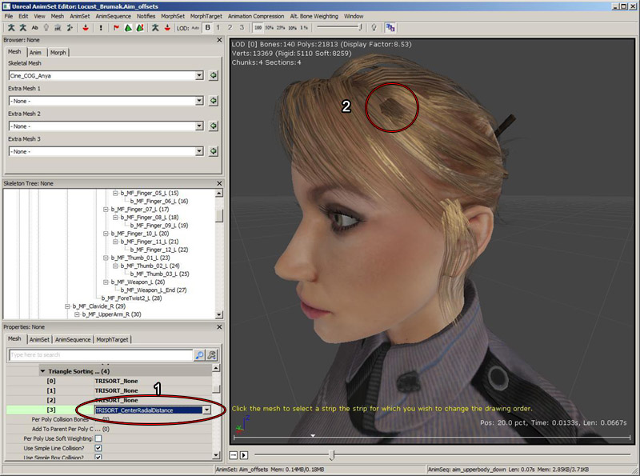
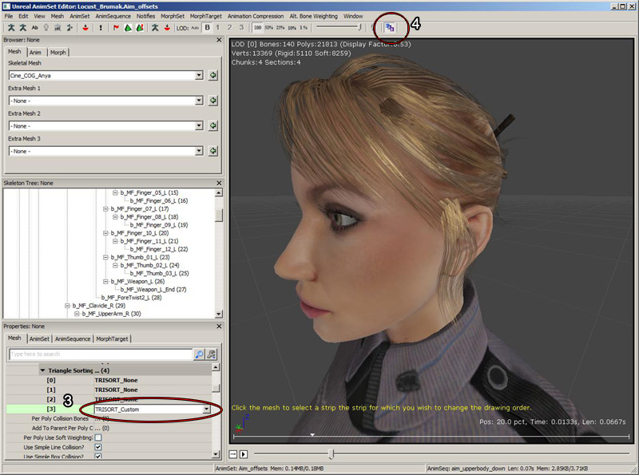
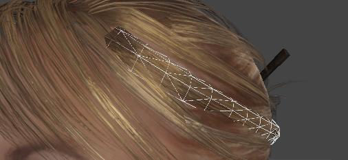
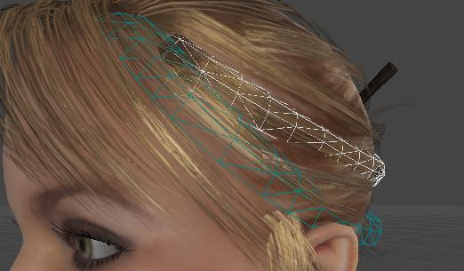
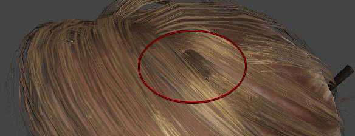
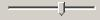

UDN
Search public documentation:
TranslucentHairSorting
日本語訳
中国翻译
한국어
Interested in the Unreal Engine?
Visit the Unreal Technology site.
Looking for jobs and company info?
Check out the Epic games site.
Questions about support via UDN?
Contact the UDN Staff
中国翻译
한국어
Interested in the Unreal Engine?
Visit the Unreal Technology site.
Looking for jobs and company info?
Check out the Epic games site.
Questions about support via UDN?
Contact the UDN Staff
UE3 Home > Skeletal Meshes > Translucent Hair Sorting
UE3 Home > Character Artist > Translucent Hair Sorting
UE3 Home > Character Artist > Translucent Hair Sorting
Translucent Hair Sorting
Overview
It is still too expensive to render each strand of hair in real time games, thus hair is often achieved by layering polygons on top of each other to create the illusion of hair. The polygons are then textured with hair strands with translucent edges. The potential problem with this method, is that the polygons tend to intersect with each other; which is requirement to make hair look less like a helmet on the character's head. As polygons intersect, many real time renderers do not correctly draw the polygons in the correct order producing a shimmering effect or polygon popping effect. Unreal Engine 3 solves this by allowing artists to control the exact rendering order of polygons within skeletal meshes. Hair can also be substituted for other hair like instances such as fur or moss.
How to access translucent hair sorting?
The hair sorting features can be accessed via the AnimSet Editor. There you can work with the area designated to be translucent hair, including sorting modes.
Triangle sorting modes
TRISORT_None
No sorting has been applied to the index buffer, and the triangle drawing order is that which is optimized for the vertex cache.TRISORT_CenterRadialDistance
The center of all vertices for this material/section is found. Then each continuous strip of triangles sharing an edge is considered. Strips closer to the center of the mesh are rendered first, followed by strips outside. This usually gives a reasonable result for a player's head because it renders the lower layers first.TRISORT_Random
This mode is used for testing and just orders the triangles randomly.TRISORT_Tootle
This mode uses AMD's overdraw-minimizing Tootle library to perform a sort similar to TRISORT_CenterRadialDistance.TRISORT_MergeContiguous
This mode retains the existing draw order as much as possible, but if any strips of triangles are physically connected (ie they share an edge) but are not contiguous in the index buffer (drawing order), they will be merged to form a contiguous triangle strip. This is useful for the case where the default draw order after mesh import is quite good, but there are a few non-contiguous strips. Once the strips have been made contiguous, TRISORT_Custom can be used to make adjustments to the strips' drawing sequence.TRISORT_Custom
This option allows you to select an individual strip of triangles and change the sort order so it will always render before or after another strip of hair. Usually it's best to set the hair to sort with TRISORT_CenterRadialDistance (1) to get a reasonable draw order. But often there will be specific strips of hair for which need to be changed to render in front of or behind other strips. In the example below, we would like the circled strip of hair (2) to render behind the hair strips beside it.  To do this, we change to TRISORT_Custom, and then enable the custom sorting editing mode with the ASV toolbar icon.  Once in the custom sorting mode, you can select a strip of hair by clicking on it. A hair strip is set of triangles in the mesh that are connected to each other by at least one edge. The selection will draw as a white wireframe over the hair. Once you have a strip of hair selected, you will be able to move it backwards to draw behind other strips, or forwards to draw in front of other strips of hair.  To move it backwards, hold down B and then move the mouse over another strip of hair. The strip under the cursor will render blue of it is currently behind the selected strip. Still holding down B, click with the left mouse and the white selected strip will change its draw order so it is rendered behind the blue strip. To move it forwards, hold down F and move the mouse over a strip of hair. This time only strips currently in front of the selected strip will highlight in blue. Click the blue strip and the selected hair will change its draw order so it's rendered in front of the blue strip. The yellow text at the bottom of the viewport tells you what to do at each step.  Finally, the hair strip is rendered in the order we want: TRISORT_CustomLeftRight
This option works exactly the same as TRISORT_Custom, but it stores two different drawing orders: one when viewing the left side of the model, and one when viewing the right side. At runtime, the order chosen will depend on which side of the mesh the viewer is viewing. This option increases memory usage by 6 bytes per triangle in the section. There is a button in the toolbar to specify whether to edit the left or the right side drawing order:- CustomLeftRightBoneName - Name of the bone that will have its origin and axis used to determine which side of the hair is visible. This should usually be the head bone. If set to None, origin and local space of the mesh will be used.
- CustomLeftRightAxis - Bone axis that points to the Right when the camera is facing the mesh. You can visualize the axis for each bone by turning on the skeleton rendering and optionally the bone names. Each bone has 3 colored lines, the Red line is X, Green is Y and Blue is the Z axis.
Triangle draw order visualization slider
This slider allows you to visualize the triangle drawing order. Sliding the slider to the left progressively reduces the number of translucent triangles shown, and sliding it to the right shows more triangles, in the order they are rendered. It also allows you to peel back layers of translucency to select a strip hidden behind other strips.  It is only effective for materials with a translucent blend mode.
Notes about reimporting skeletal meshes
When reimporting a skeletal mesh with custom sorting, Unreal Engine 3 will attempt to backup and restore the sorting order. The vertex order does not need to be the same. Instead, the reference pose position for each triangle in each strip of hair in the new mesh is compared to the old mesh. If all the triangles in the strip match up, the strip will retain the draw order. Strips of hair with modified vertices, or newly added hair strips will however need to be manually sorted. If any strips in the old mesh could not be matched up with the new mesh, a message will warn the user of how many strips could not be matched up.
One pass lighting for hair
Lighting translucency in multiple passes does not work correctly with multiple overlapping layers in the same mesh, giving an overly bright result. There is a now one pass lighting setting that is the default for SkeletalMeshCinematicActors, so place a SkeletalMeshCinematicActor to preview the lighting in the editor. The bUseOnePassLightingOnTranslucency flag must be set to true in script on gameplay skeletal mesh components to use the one pass lighting.